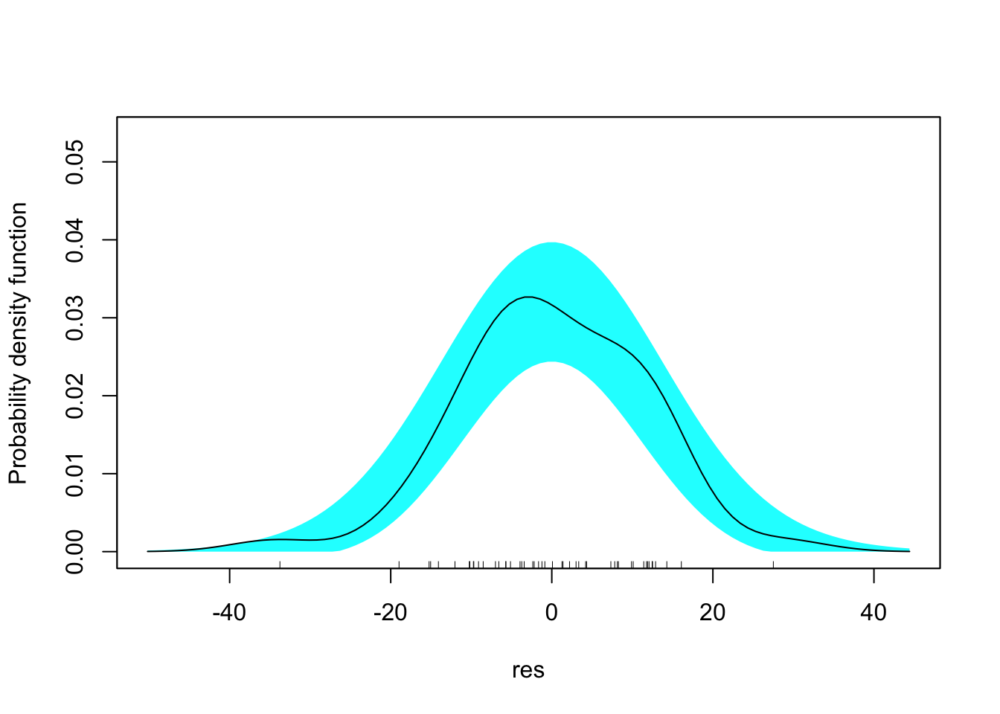
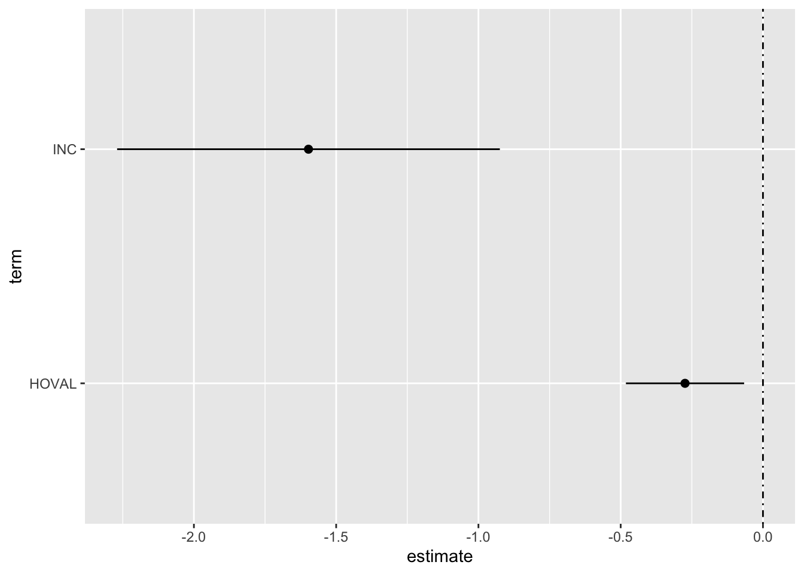
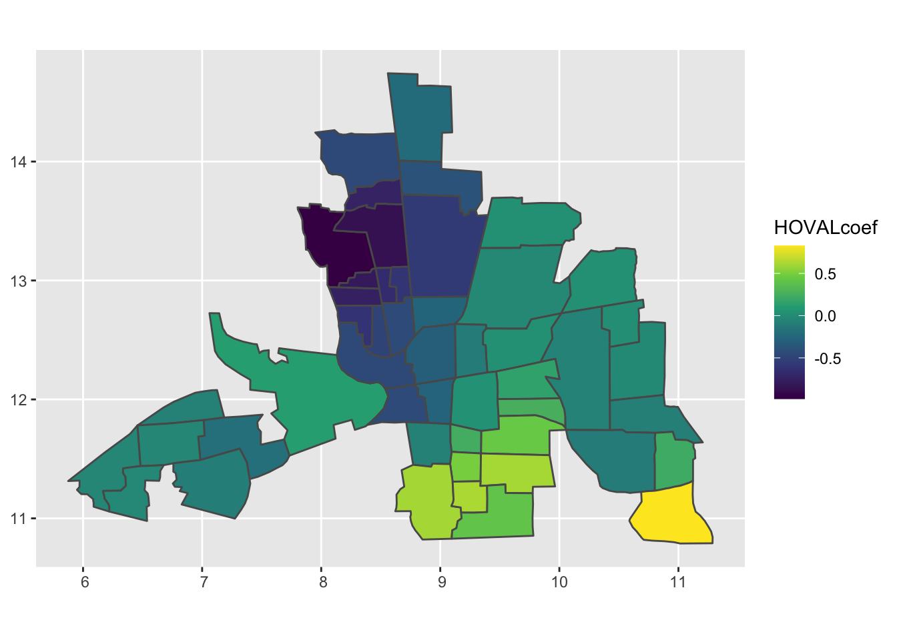
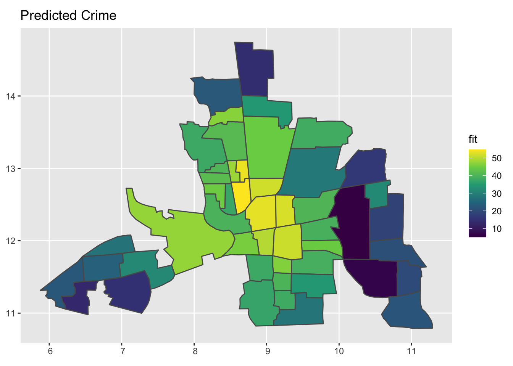
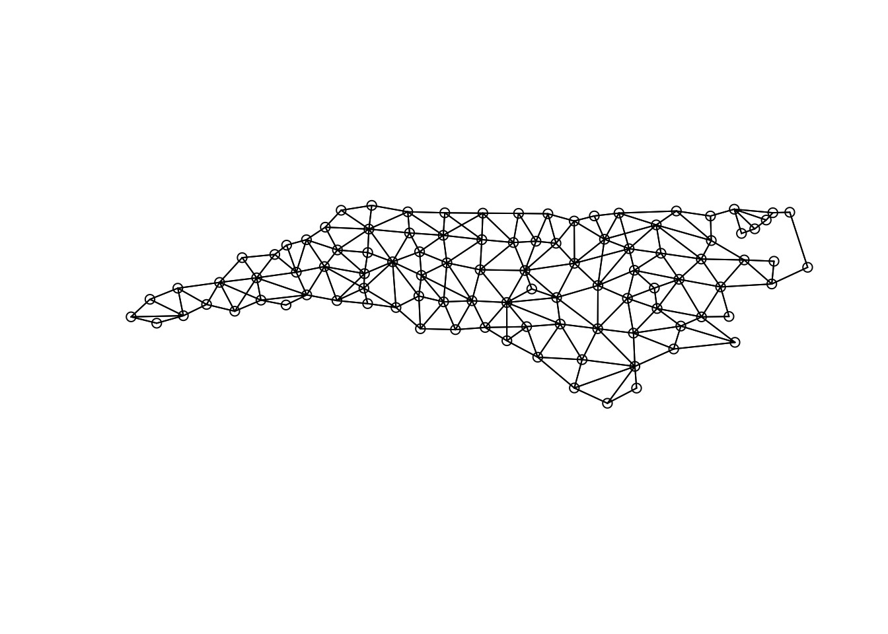
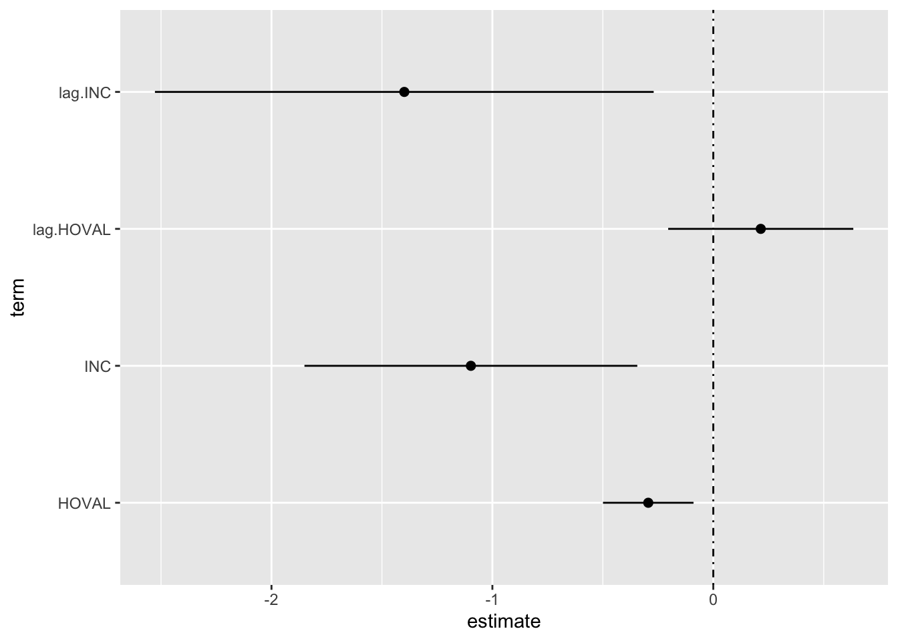
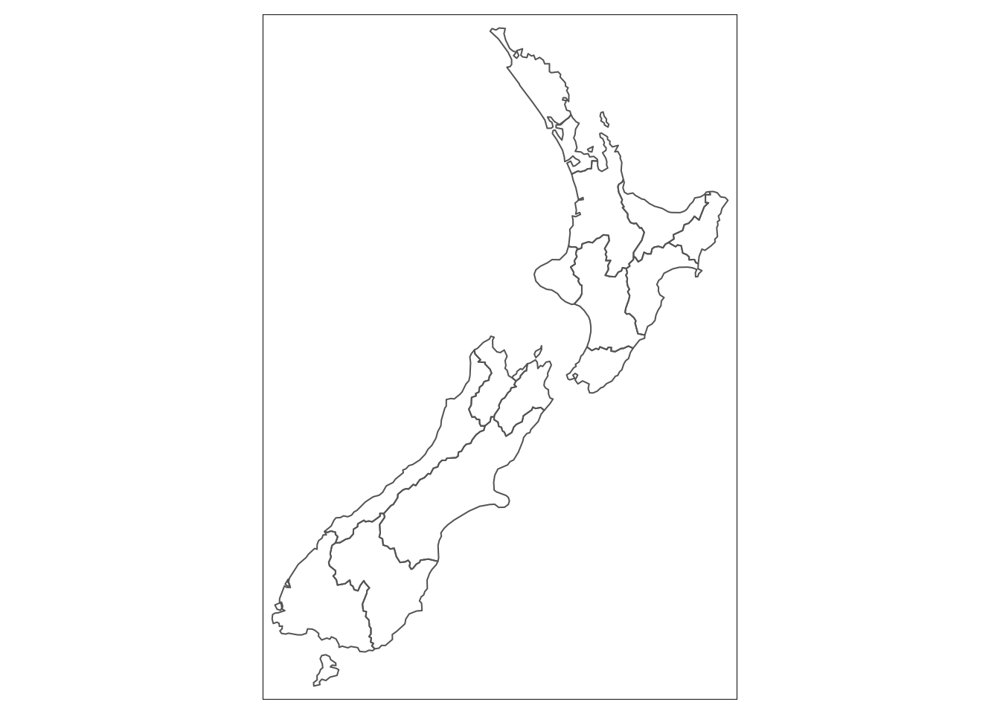
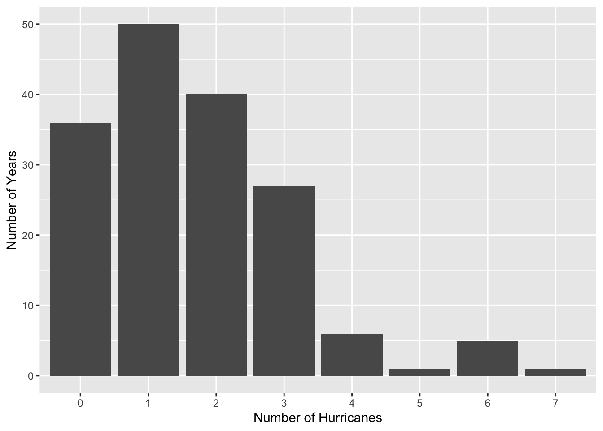

Thursday, September 21, 2022
Today {-}
- Making maps
Simple feature data frames
Geographic visualization of data is important to geographers and environmental scientists. There are lots of tools available for geo visualization from full-scale GIS applications such as ArcGIS and QGIS to web-based tools like Google maps.
Using code to make maps (instead of point and click) has the benefit of transparency and reproducibility.
Simple features (simple feature access) refers to a standard that describes how objects in the real world are represented in computers. Emphasis is on the spatial geometry of the objects.
The standard also describes how such objects are stored in and retrieved from databases, and which geometrical operations are defined for them.
The simple feature standard is implemented in spatial databases (such as PostGIS), commercial GIS (e.g., ESRI ArcGIS). R has an implementation in the {sf} package.
One type of spatial data file is called a shapefile. As an example, the U.S. census information at the state and territory level in a file called cb_2015_us_state_500k.shp.
A shapefile encodes points, lines, and polygons in geographic space, and is actually a set of files. Shapefiles appear with a .shp extension and with accompanying files ending in .dbf and .prj.
.shpstores the geographic coordinates of the geographic features (e.g. country, state, county).dbfstores data associated with the geographic features (e.g. unemployment rates).prjstores information about the projection of the coordinates in the shapefile
To get a shapefile into R all the files need to be in the same folder (directory).
As an example, you import the census data with the sf::st_read() function from the {sf} package. You assign to the object usa.sf the contents of the spatial data frame.
usa.sf <- sf::st_read(dsn = "data/cb_2015_us_state_500k")## Reading layer `cb_2015_us_state_500k' from data source
## `/Users/jameselsner/Desktop/ClassNotes/QG-2022/data/cb_2015_us_state_500k'
## using driver `ESRI Shapefile'
## Simple feature collection with 56 features and 9 fields
## Geometry type: MULTIPOLYGON
## Dimension: XY
## Bounding box: xmin: -179.1489 ymin: -14.5487 xmax: 179.7785 ymax: 71.36516
## Geodetic CRS: NAD83The output includes information about the file. The object shows up in our environment as a data frame with 56 observations and 10 variables.
Each observation is either a state or territory.
The class() function tells us the type of data frame and the names() function list the variable names.
class(usa.sf)## [1] "sf" "data.frame"names(usa.sf)## [1] "STATEFP" "STATENS" "AFFGEOID" "GEOID" "STUSPS" "NAME"
## [7] "LSAD" "ALAND" "AWATER" "geometry"The file is a simple feature (sf) data frame (data.frame). This means it behaves like a data frame but it also contains information about where the observations are located.
The first several columns serve as identifiers. The variable ALAND is the land area (square meters) and the AWATER is the water area (sq. m).
The last column labeled geometry contains information about location stored as a ‘feature.’ The function sf::st_geometry() list the first 5 geometries.
sf::st_geometry(usa.sf)## Geometry set for 56 features
## Geometry type: MULTIPOLYGON
## Dimension: XY
## Bounding box: xmin: -179.1489 ymin: -14.5487 xmax: 179.7785 ymax: 71.36516
## Geodetic CRS: NAD83
## First 5 geometries:## MULTIPOLYGON (((-104.0534 41.17054, -104.0532 4...## MULTIPOLYGON (((-122.3316 48.02056, -122.3283 4...## MULTIPOLYGON (((-109.0502 31.48, -109.0498 31.4...## MULTIPOLYGON (((-104.0577 44.99743, -104.0495 4...## MULTIPOLYGON (((-89.40565 36.52817, -89.39869 3...The geometry type in this case is MULTIPOLYGON.
A feature is an object in the real world. Often features will consist of a set of features. For instance, a tree is a feature but a set of trees in a forest is itself a feature. The trees are represented as points while the forest boundary as a polygon.
Features have a geometry describing where on Earth the feature is located. They also have attributes, which describe other properties of the feature.
More on spatial data in a few weeks.
Making a boundary map
The functions in the {ggplot2} package work with simple feature data frames to generate maps using the same grammar.
The important function is geom_sf(). This function draws the geometries.
For example, to draw a map showing the state and territorial boundaries first use ggplot() with the data argument specifying the simple feature data frame usa.sf and then add the geom_sf() function as a layer with the + symbol.
library(ggplot2)
ggplot(data = usa.sf) +
geom_sf()
Note: you don’t need the mapping = aes() function. The mapping is assumed based on the fact that there is a geometry column in the simple feature data frame.
The geom_sf() function maps the east-west coordinate to the x aesthetic and the north-south coordinate to the y aesthetic.
The resulting map is not very informative, and since territories span the globe let’s zoom into the contiguous U.S.
What states/territories are there in the data frame usa.sf?
usa.sf$NAME## [1] "Nebraska"
## [2] "Washington"
## [3] "New Mexico"
## [4] "South Dakota"
## [5] "Kentucky"
## [6] "Georgia"
## [7] "Arkansas"
## [8] "Pennsylvania"
## [9] "Mississippi"
## [10] "Colorado"
## [11] "Utah"
## [12] "Tennessee"
## [13] "Wyoming"
## [14] "Indiana"
## [15] "Alaska"
## [16] "Nevada"
## [17] "Illinois"
## [18] "Vermont"
## [19] "Montana"
## [20] "Iowa"
## [21] "South Carolina"
## [22] "Arizona"
## [23] "American Samoa"
## [24] "Ohio"
## [25] "Alabama"
## [26] "Wisconsin"
## [27] "Oregon"
## [28] "Missouri"
## [29] "North Carolina"
## [30] "Oklahoma"
## [31] "Virginia"
## [32] "West Virginia"
## [33] "Louisiana"
## [34] "Michigan"
## [35] "Massachusetts"
## [36] "Idaho"
## [37] "Puerto Rico"
## [38] "Florida"
## [39] "Kansas"
## [40] "New Hampshire"
## [41] "Delaware"
## [42] "Texas"
## [43] "Minnesota"
## [44] "United States Virgin Islands"
## [45] "Connecticut"
## [46] "New Jersey"
## [47] "North Dakota"
## [48] "Maryland"
## [49] "Maine"
## [50] "Hawaii"
## [51] "Guam"
## [52] "Commonwealth of the Northern Mariana Islands"
## [53] "Rhode Island"
## [54] "California"
## [55] "New York"
## [56] "District of Columbia"To zoom in you keep only rows corresponding to states (in the lower 48) from the simple feature data frame.
Recall to pick out rows in a data frame you use the dplyr::filter() function from the {dplyr} package.
First you need to get a list of all the states you want to keep. The state.name vector object contains all 50 state names. This is like the month.abb vector you saw earlier.
state.name## [1] "Alabama" "Alaska" "Arizona" "Arkansas"
## [5] "California" "Colorado" "Connecticut" "Delaware"
## [9] "Florida" "Georgia" "Hawaii" "Idaho"
## [13] "Illinois" "Indiana" "Iowa" "Kansas"
## [17] "Kentucky" "Louisiana" "Maine" "Maryland"
## [21] "Massachusetts" "Michigan" "Minnesota" "Mississippi"
## [25] "Missouri" "Montana" "Nebraska" "Nevada"
## [29] "New Hampshire" "New Jersey" "New Mexico" "New York"
## [33] "North Carolina" "North Dakota" "Ohio" "Oklahoma"
## [37] "Oregon" "Pennsylvania" "Rhode Island" "South Carolina"
## [41] "South Dakota" "Tennessee" "Texas" "Utah"
## [45] "Vermont" "Virginia" "Washington" "West Virginia"
## [49] "Wisconsin" "Wyoming"Let’s remove the rows corresponding to the names "Alaska" and "Hawaii". These are elements 2 and 11 so you create a new vector object called states.names (recycling the name) containing only the names of the lower 48.
state.name <- state.name[c(-2, -11)]
state.name## [1] "Alabama" "Arizona" "Arkansas" "California"
## [5] "Colorado" "Connecticut" "Delaware" "Florida"
## [9] "Georgia" "Idaho" "Illinois" "Indiana"
## [13] "Iowa" "Kansas" "Kentucky" "Louisiana"
## [17] "Maine" "Maryland" "Massachusetts" "Michigan"
## [21] "Minnesota" "Mississippi" "Missouri" "Montana"
## [25] "Nebraska" "Nevada" "New Hampshire" "New Jersey"
## [29] "New Mexico" "New York" "North Carolina" "North Dakota"
## [33] "Ohio" "Oklahoma" "Oregon" "Pennsylvania"
## [37] "Rhode Island" "South Carolina" "South Dakota" "Tennessee"
## [41] "Texas" "Utah" "Vermont" "Virginia"
## [45] "Washington" "West Virginia" "Wisconsin" "Wyoming"Now you filter the usa.sf data frame keeping only the rows that are listed in the vector of state names. Assign this spatial data frame the name usa_48.sf.
usa_48.sf <- usa.sf |>
dplyr::filter(NAME %in% state.name)The function %in% finds only the rows in usa.sf with NAME equal to the names in the vector state.name and the dplyr::filter() function chooses these rows.
Now redraw the map using the usa_48.sf simple feature data frame.
ggplot(data = usa_48.sf) +
geom_sf()
Since the map is a ggplot() object, it is modified like any other ggplot() graph. For example, you change the color of the map and the borders as follows.
ggplot(data = usa_48.sf) +
geom_sf(fill = "skyblue",
color = "gray70")
You can filter by state. Here you create a new simple feature data frame called Florida.sf then draw the boundary.
Florida.sf <- usa_48.sf |>
dplyr::filter(NAME == "Florida")
ggplot(data = Florida.sf) +
geom_sf(fill = "palegreen",
color = "black")
Where is the state of Nebraska? Repeat but fill in Nebraska using the color brown.
Nebraska.sf <- usa_48.sf |>
dplyr::filter(NAME == "Nebraska")
ggplot(data = usa_48.sf) +
geom_sf() +
geom_sf(data = Nebraska.sf,
fill = "brown")
You add layers with the + symbol as before.
Boundaries serve as the background canvas for spatial data analysis. You usually need to add data to this canvas. Depending on the type of data, you either overlay it on top of the boundaries or use it to fill in the areas between the boundaries.
Fills
Choropleth maps (heat maps, thematic maps) map data values from a column in the simple feature data frame to the fill aesthetic. The aesthetic assigns colors to the various map areas (e.g. countries, states, counties, zip codes).
Recall the column labeled AWATER contains the water area in square meters. Since the values are very large first divide by million (10^9) to get the values in 1000s of square kilometers. This is done with the mutate() function.
usa_48.sf <- usa_48.sf |>
dplyr::mutate(WaterArea_km2 = AWATER/10^9)Then create a choropleth map showing the water area by filling the area between the state borders with a color. This is done using the aes() function and the argument fill = WaterArea_km2.
ggplot(data = usa_48.sf) +
geom_sf(aes(fill = WaterArea_km2))
Note how this differs from just drawing the boundaries. In this case you use the aes() function with the fill aesthetic.
The map is not very informative. large water area of Michigan which includes Lakes Michigan, Superior, and Huron has by far the most water area with most other states have a lot less.
To change that use the logarithm of the area. The base 10 logarithm is 0 when the value is 1, 1 when the value is 10, 2 when the value is 100 and so on. This is seen with the log10() function.
log10(c(1, 10, 100, 1000, 10000))## [1] 0 1 2 3 4You convert the area to logarithms with the log10() function inside the aes() function as follows.
ggplot(data = usa_48.sf) +
geom_sf(aes(fill = log10(WaterArea_km2))) 
Another way to make the map more informative is to convert the continuous variable to a discrete variable and map the discrete values.
In the {dplyr} package the cut_interval() function takes a continuous variable and makes n groups each having an equal range, cut_number() makes n groups with (approximately) equal numbers of observations; cut_width() makes groups of equal width.
As an example, if you want a map with 5 colors with each color representing a state having a similar amount of water area you would use cut_number() and specify n = 5. You do this with the mutate() function to create a new variable (column) called WaterArea_cut.
usa_48.sf <- usa_48.sf |>
dplyr::mutate(WaterArea_cut = cut_number(WaterArea_km2, n = 5))
str(usa_48.sf)## Classes 'sf' and 'data.frame': 48 obs. of 12 variables:
## $ STATEFP : chr "31" "53" "35" "46" ...
## $ STATENS : chr "01779792" "01779804" "00897535" "01785534" ...
## $ AFFGEOID : chr "0400000US31" "0400000US53" "0400000US35" "0400000US46" ...
## $ GEOID : chr "31" "53" "35" "46" ...
## $ STUSPS : chr "NE" "WA" "NM" "SD" ...
## $ NAME : chr "Nebraska" "Washington" "New Mexico" "South Dakota" ...
## $ LSAD : chr "00" "00" "00" "00" ...
## $ ALAND : num 1.99e+11 1.72e+11 3.14e+11 1.96e+11 1.02e+11 ...
## $ AWATER : num 1.36e+09 1.25e+10 7.56e+08 3.38e+09 2.39e+09 ...
## $ geometry :sfc_MULTIPOLYGON of length 48; first list element: List of 1
## ..$ :List of 1
## .. ..$ : num [1:1985, 1:2] -104 -104 -104 -104 -104 ...
## ..- attr(*, "class")= chr [1:3] "XY" "MULTIPOLYGON" "sfg"
## $ WaterArea_km2: num 1.356 12.54 0.756 3.38 2.389 ...
## $ WaterArea_cut: Factor w/ 5 levels "[0.489,1.37]",..: 1 5 1 3 2 3 3 3 3 1 ...
## - attr(*, "sf_column")= chr "geometry"
## - attr(*, "agr")= Factor w/ 3 levels "constant","aggregate",..: NA NA NA NA NA NA NA NA NA NA ...
## ..- attr(*, "names")= chr [1:11] "STATEFP" "STATENS" "AFFGEOID" "GEOID" ...Essentially you added a new factor variable called WaterArea_cut with five levels corresponding to equal number of water area values.
You can go directly to the mapping as follows.
ggplot(data = usa_48.sf) +
geom_sf(aes(fill = WaterArea_cut))
Make a choropleth map displaying the ratio of water area to land area (ALAND) by state.
ggplot(data = usa_48.sf) +
geom_sf(aes(fill = AWATER/ALAND * 100))
Overlays
The usa_48.sf simple feature data frame uses longitude and latitude for it’s coordinate reference system (CRS). All spatial data frames have a CRS.
To see what CRS a simple feature data frame use the sf::st_crs() function.
sf::st_crs(usa_48.sf)## Coordinate Reference System:
## User input: NAD83
## wkt:
## GEOGCRS["NAD83",
## DATUM["North American Datum 1983",
## ELLIPSOID["GRS 1980",6378137,298.257222101,
## LENGTHUNIT["metre",1]]],
## PRIMEM["Greenwich",0,
## ANGLEUNIT["degree",0.0174532925199433]],
## CS[ellipsoidal,2],
## AXIS["latitude",north,
## ORDER[1],
## ANGLEUNIT["degree",0.0174532925199433]],
## AXIS["longitude",east,
## ORDER[2],
## ANGLEUNIT["degree",0.0174532925199433]],
## ID["EPSG",4269]]The Coordinate Reference System information including the EPSG code (4269) and the corresponding GEOGCS, DATUM, etc is given in well-known text (wkt).
Here it specifies a geographic reference system with longitude and latitude and a datum (North American 1983) that describes the sea-level shape of the planet as an ellipsoid.
Because the CRS uses longitude and latitude you can add locations by specifying the geographic coordinates.
For example, suppose you want to overlay the locations of two cities on the map. First you create a data frame containing the longitudes, latitudes, and names of the locations.
Cities.df <- data.frame(long = c(-84.2809, -87.9735),
lat = c(30.4381,43.0115),
names = c("Tallahassee", "Milwaukee"))
class(Cities.df)## [1] "data.frame"Next you draw the map as before but add the locations with a point layer and label the locations with a text layer.
ggplot(data = usa_48.sf) +
geom_sf(color = "gray80") +
geom_point(data = Cities.df,
mapping = aes(x = long, y = lat),
size = 2) +
geom_text(data = Cities.df,
mapping = aes(x = long, y = lat, label = names),
nudge_y = 1)
As another example, let’s consider the airports data frame from the {nycflights13} package. The data frame includes information on 1458 airports in the United States including their location with latitude and longitude.
library(nycflights13)
airports## # A tibble: 1,458 × 8
## faa name lat lon alt tz dst tzone
## <chr> <chr> <dbl> <dbl> <dbl> <dbl> <chr> <chr>
## 1 04G Lansdowne Airport 41.1 -80.6 1044 -5 A America/…
## 2 06A Moton Field Municipal Airport 32.5 -85.7 264 -6 A America/…
## 3 06C Schaumburg Regional 42.0 -88.1 801 -6 A America/…
## 4 06N Randall Airport 41.4 -74.4 523 -5 A America/…
## 5 09J Jekyll Island Airport 31.1 -81.4 11 -5 A America/…
## 6 0A9 Elizabethton Municipal Airport 36.4 -82.2 1593 -5 A America/…
## 7 0G6 Williams County Airport 41.5 -84.5 730 -5 A America/…
## 8 0G7 Finger Lakes Regional Airport 42.9 -76.8 492 -5 A America/…
## 9 0P2 Shoestring Aviation Airfield 39.8 -76.6 1000 -5 U America/…
## 10 0S9 Jefferson County Intl 48.1 -123. 108 -8 A America/…
## # … with 1,448 more rowsEach row is an airport and the location of the airport is given in the columns lat and lon. You can make a map without boundaries by drawing a scatter plot with x = lon and y = lat.
ggplot(data = airports,
mapping = aes(x = lon, y = lat)) +
geom_point()
If you only want airports within the continental United States, you first plot the usa_48.sf boundaries and then add the airport locations as a separate point layer and the use the coord_sf() function specifying the limits of the plot in the longitude direction (xlim) and the latitude direction (ylim).
ggplot(data = usa_48.sf) +
geom_sf(color = "gray80") +
geom_point(data = airports,
aes(x = lon, y = lat)) +
coord_sf(xlim = c(-130, -60),
ylim = c(20, 50)) +
theme_minimal()
Alternatively, you can use sf::st_as_sf() to convert the airports data frame to a simple features data frame. The argument coords = tells sf::st_as_sf() which columns contain the geographic coordinates of each airport. You also set the CRS using the sf::st_crs() function and use the EPSG code corresponding to a geographic CRS.
airports.sf <- sf::st_as_sf(airports,
coords = c("lon", "lat"),
crs = 4269)
airports.sf## Simple feature collection with 1458 features and 6 fields
## Geometry type: POINT
## Dimension: XY
## Bounding box: xmin: -176.646 ymin: 19.72137 xmax: 174.1136 ymax: 72.27083
## Geodetic CRS: NAD83
## # A tibble: 1,458 × 7
## faa name alt tz dst tzone geometry
## * <chr> <chr> <dbl> <dbl> <chr> <chr> <POINT [°]>
## 1 04G Lansdowne Airport 1044 -5 A Amer… (-80.61958 41.13047)
## 2 06A Moton Field Municipa… 264 -6 A Amer… (-85.68003 32.46057)
## 3 06C Schaumburg Regional 801 -6 A Amer… (-88.10124 41.98934)
## 4 06N Randall Airport 523 -5 A Amer… (-74.39156 41.43191)
## 5 09J Jekyll Island Airport 11 -5 A Amer… (-81.42778 31.07447)
## 6 0A9 Elizabethton Municip… 1593 -5 A Amer… (-82.17342 36.37122)
## 7 0G6 Williams County Airp… 730 -5 A Amer… (-84.50678 41.46731)
## 8 0G7 Finger Lakes Regiona… 492 -5 A Amer… (-76.78123 42.88356)
## 9 0P2 Shoestring Aviation … 1000 -5 U Amer… (-76.64719 39.79482)
## 10 0S9 Jefferson County Intl 108 -8 A Amer… (-122.8106 48.05381)
## # … with 1,448 more rowsTo graph the points on the map, you use a second geom_sf().
ggplot() +
geom_sf(data = usa_48.sf) +
geom_sf(data = airports.sf, shape = 1) +
coord_sf(xlim = c(-130, -60),
ylim = c(20, 50))
You can change the size or type of symbols on the map. For instance, you can draw a bubble plot (also known as a proportional symbol map) and encode the altitude of the airport through the size = aesthetic.
ggplot() +
geom_sf(data = usa_48.sf) +
geom_sf(data = airports.sf, aes(size = alt),
fill = "grey", color = "black", alpha = .2) +
coord_sf(xlim = c(-130, -60),
ylim = c(20, 50)) +
scale_size_area(guide = FALSE)## Warning: It is deprecated to specify `guide = FALSE` to remove a guide. Please
## use `guide = "none"` instead.
Circle area is proportional to the airport’s altitude (in feet).
Map projections
Representing the globe on a flat surface is challenging. Depending on how the globe is projected onto a 2-D surface (map), at least some features will be distorted.
The coord_sf() function package provides a way to project the globe in various ways.
With a geographic projection the longitudes and latitudes are treated as x (horizontal) and y (vertical) coordinates. First assign the map to base_map and then render it to the plot device.
base_map <- ggplot(data = usa_48.sf) +
geom_sf()
base_map
Note that the equal spacing between the latitudes and between the longitudes and that 1 degree latitude equals 1 degree longitude.
To change this ‘carto-cartesian’ map you need to project it.
Some projections are simple and require just the name of the projection. As an example, to change the base map to have a Mercator projection you use the coord_sf() function with crs = "+proj=merc".
base_map +
coord_sf(crs = "+proj=merc") +
ggtitle("Mercator projection")
Note that the distance between the latitudes increases with increasing latitude.
The Mercator is widely used but it makes an area closer to the poles appear larger than the same area closer to the equator. Greenland ends up larger than the entire continent of Africa.
Other coordinate systems require specification of the standard lines, or lines that define areas of the surface of the map that are tangent to the globe. These include Gall-Peters, Albers equal-area, and Lambert azimuthal.
base_map +
coord_sf(crs = "+proj=cea +lon_0=0 +lat_ts=45") +
ggtitle("Gall-Peters projection")
With this projection you can visually compare the areas but shapes are distorted.
Distortions are minimized between latitudes defined by the Albers equal area projection.
base_map +
coord_sf(crs = "+proj=aea +lat_1=25 +lat_2=50 +lon_0=-100") +
ggtitle("Albers equal-area projection")
See Kyle Walker’s get CRS See maptiles package https://github.com/riatelab/maptiles/
Why map projections matter. Clip from The West Wing. https://youtu.be/vVX-PrBRtTY